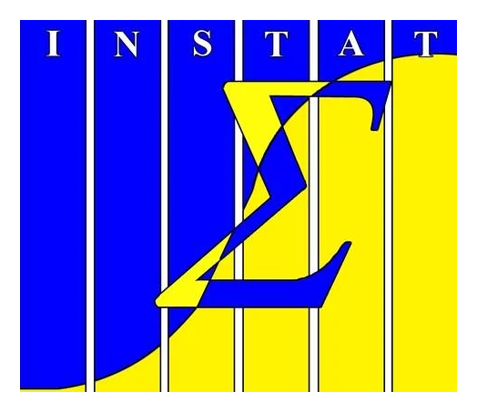

MATCH
Pair archived forecasts with corresponding reference observations.

Autocorrelation-Aware Evaluation of Entropy-Based Feature Spaces for Anticipating Meteorological Forecast Errors in Philippine Urban Environments, with Emphasis on Approaches from Information Theory and Topological Data Analysis
Numerical weather prediction (NWP) uses observations, atmospheric physics, and mathematical models to estimate how the atmosphere will evolve. Improvements in computing, observations, and model design have made forecasts increasingly capable. Yet the atmosphere is complex, observations are incomplete, and models can only approximate real processes. Forecast errors therefore remain unavoidable.
People and institutions make decisions before the weather actually occurs. A forecast that is substantially wrong can affect the usefulness of those decisions.
Conventional verification compares a forecast with what happened. That tells us how accurate it was, but only after the valid time has passed.
Information available before the forecast's valid time that may help indicate how large its eventual error could be.
Earlier studies have explored forecast-error prediction using ensemble spread, atmospheric fields, previous errors, and machine-learning methods. Separately, time-series research has used entropy and topological methods to describe patterns that ordinary summaries may miss. What remains less established is whether these descriptions of recent, local meteorological observations add useful predictive information about the errors of a specific numerical weather prediction product.
The study tests whether measurable properties of the preceding 28 days of local weather observations can help predict the magnitude of a 72-hour-ahead forecast error.
Commuting, outdoor activities, and daily schedules rely on forecasts.
Weather information informs decisions around planting, harvesting, and crop drying.
Disaster-risk practitioners make plans before forecast conditions are realized.
The analysis focuses on Quezon City and examines whether the preceding 28 days of observations help explain subsequent forecast-error magnitude.
Pair archived forecasts with corresponding reference observations.
Characterize the preceding 28 days of each meteorological series.
Calculate conventional and entropy-based features.
Fit dynamic regression with ARIMA errors to forecast-error series.
Compare predictions on chronologically held-out observations.
Response: pointwise absolute forecast error, AEₜ = |Oₜ − Fₜ|. Predictors: features extracted from the preceding 672-hour observation window, ending at forecast initialization. The primary data plan is to request forecasts and station observations from DOST–PAGASA. If suitable records are unavailable, the proposal specifies an alternative using Open-Meteo Historical Weather (Best Match) as the reference and its Previous Runs archive for the JMA GSM Day 3 forecast. Model-based reference values must be interpreted as forecast-to-reference discrepancies, not direct station-observation verification.
A mean or standard deviation can summarize a series, but two weather records with similar averages and variability may still behave differently over time. Entropy-based measures offer additional ways to describe that behavior. They are candidate predictors, not automatic measures of forecast difficulty.
How spread out are the observed values?
Distributional uncertainty · Shannon (1948)How often do similar sequences remain similar?
Recurrence and regularity · Richman & Moorman (2000)How diverse are the relative orderings of values?
Ordinal patterns · Bandt & Pompe (2002)How is signal power distributed across frequencies?
Frequency-domain structure · Inouye et al. (1991)How are topological feature lifetimes distributed across scales?
Topological summary · Atienza et al. (2020)All configurations use the same modeling framework. Only the information supplied to the model changes.
Past forecast errors and ARIMA error structure.
Conventional time-series features.
Individual and combined entropy features.
Otherwise equivalent models, with and without Persistent Entropy.
Time order is preserved to reflect prediction into the future.
The comparison assesses whether added features improve predictions on unseen later observations.
The study evaluates whether entropy-based features provide information beyond conventional predictors in the specified forecast-error prediction task.
Determine whether the feature measures capture overlapping or different information.
Test whether entropy features add value beyond conventional predictors and past errors.
Assess the incremental contribution of Persistent Entropy.
Provide evidence to guide feature selection in similar research.
Atienza, N., Gonzalez-Díaz, R., & Soriano-Trigueros, M. (2020). On the stability of persistent entropy and new summary functions for topological data analysis. Pattern Recognition, 107, 107509.
Bandt, C., & Pompe, B. (2002). Permutation entropy: A natural complexity measure for time series. Physical Review Letters, 88(17), 174102.
Bauer, P., Thorpe, A., & Brunet, G. (2015). The quiet revolution of numerical weather prediction. Nature, 525, 47–55.
Hyndman, R. J., & Athanasopoulos, G. (2021). Forecasting: Principles and practice (3rd ed.). OTexts.
Inouye, T., et al. (1991). Quantification of EEG irregularity by use of the entropy of the power spectrum. Electroencephalography and Clinical Neurophysiology, 79(3), 204–210.
Leutbecher, M., & Palmer, T. N. (2008). Ensemble forecasting. Journal of Computational Physics, 227(7), 3515–3539.
Richman, J. S., & Moorman, J. R. (2000). Physiological time-series analysis using approximate entropy and sample entropy. American Journal of Physiology—Heart and Circulatory Physiology, 278(6), H2039–H2049.
Shannon, C. E. (1948). A mathematical theory of communication. Bell System Technical Journal, 27(3), 379–423.
Takens, F. (1981). Detecting strange attractors in turbulence. In Dynamical Systems and Turbulence (pp. 366–381). Springer.
The full reference list should be checked against the final approved manuscript before publication.